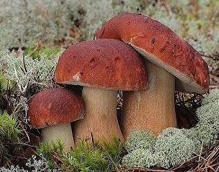
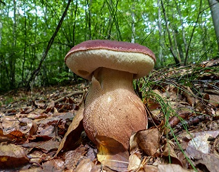
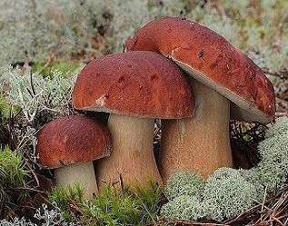
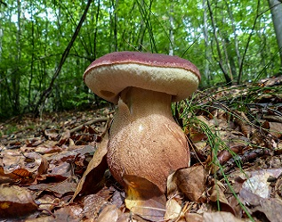

Borov vrganj - Boletus pinophilus
 



Borov vrganj (Boletus pinophilus) gljiva je odličnog kvaliteta koja je prepoznatljiva po svojemu smeđocrvenkastu klobuku, po dosta pravilnu rastu te tipično crvenkastoj mrežici na stručku. Raste od proljeća do jeseni u crnogoričnim (ispod borova) i bjelogoričnim šumama, najčešće ispod bukava. Nije osobito česta.
Klobuk je širok od 5 do 20, pa i do 30 cm, pravilan i mesnat. Isprva je uži od stručka, potom polukružan, no na tjemenu spljošten. Smeđocrvenkaste je boje, u početku gotovo crn. Malo je naboran. Kod mladih gljiva kao da je prekriven bijelim prahom koji se na rubu zadrži. Kožica je klobuka za suha vremena suha i hrapava, za vlažna se sjaji. Meso je bijelo, čvrsto, sočno, ugodna mirisa i okusa. Ne mijenja boju na presjeku. Borov je vrganj izvrsnog kvaliteta. Može se pripremati na razne načine.